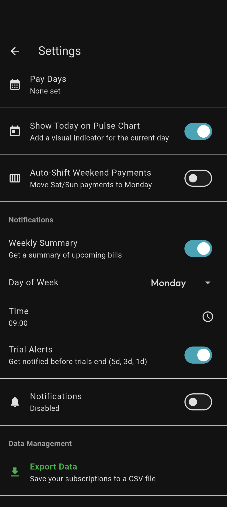

SubSentry
Your app.
Your way.
Switch themes, export your data, and keep full control — no account, no cloud, no compromise.

05
Settings Screen
Show theme picker (light/dark)
or Export Data row.
Both options work —
aim for the theme toggle.
05 / 05